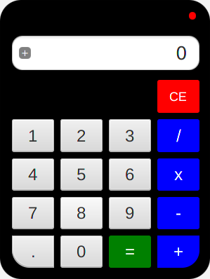

Personalización de interfaces
Como habéis podido observar, las interfaces creadas con JavaFX tienen un aspecto común que, por cierto, es bastante amigable.
Pero JavaFX nos permite tener un control total a la hora de personalizar nuestras interfaces mediante el uso hojas de estilo CSS. No pretendo mostrar en qué consiste CSS o todas las posibilidades que ofrece JavaFX para ello, pero sí que lo conozcáis y su uso básico. Si os veis en la necesidad de utilizarlo os animo a consultar la documentación que ofrece Oracle o cualquier otra fuente ya que hay mucha documentación al respecto en la web.
Si queremos modificar el aspecto de nodos particulares podemos usar el método setStyle pasándole una cadena con las diferentes propiedades CSS que queremos modificar..
Por ejemplo, en la siguiente interfaz he cambiado el aspecto de los botones y del fondo, con el siguiente resultado.
El código utilizado para ello es el siguiente:
package javafx.personalizacion;
import javafx.application.Application;
import javafx.geometry.Insets;
import javafx.geometry.Pos;
import javafx.stage.Stage;
import javafx.scene.Scene;
import javafx.scene.control.Button;
import javafx.scene.layout.BorderPane;
import javafx.scene.layout.HBox;
public class EstilosNodos extends Application {
@Override
public void start(Stage escenarioPrincipal) {
try {
BorderPane raiz = new BorderPane();
raiz.setStyle("-fx-base: #ffe4c4;"
+ " -fx-background-image: url('/javafx/imagenes/logo-ies3.png'); "
+ "-fx-background-position: center;"
+ "-fx-background-repeat: no-repeat;");
HBox hbBotones = new HBox(10);
hbBotones.setPadding(new Insets(10));
hbBotones.setAlignment(Pos.CENTER_RIGHT);
Button btAceptar, btCancelar;
btAceptar = new Button("Aceptar");
btAceptar.setStyle("-fx-font: 22 arial; -fx-base: #b6e7c9;");
btCancelar = new Button("Cancelar");
btCancelar.setStyle("-fx-font: 20 arial; -fx-base: #dc143c;");
hbBotones.getChildren().addAll(btAceptar, btCancelar);
raiz.setBottom(hbBotones);
Scene escena = new Scene(raiz, 500, 500);
escenarioPrincipal.setTitle("Estilos de nodos");
escenarioPrincipal.setScene(escena);
escenarioPrincipal.show();
} catch(Exception e) {
e.printStackTrace();
}
}
public static void main(String[] args) {
launch(args);
}
}También podemos utilizar una hoja de estilos externa de la siguiente forma:
escena.getStylesheets().add(getClass().getResource("aplicacion.css").toExternalForm());En dicha hoja de estilos podremos utilizar los selectores de clase o de identificador habituales en CSS. Una vez definidos los estilos para cada uno de los selectores podremos aplicar una clase o un identificador a un nodo dado.
//Aplicar clase
btAceptar.getStyleClass().add("btAceptar");
//Aplicar identificador
btAceptar.setId("btAceptar");Si asignamos una clase, en la hoja de estilos utilizaremos el selector .btAceptar. Si asignamos un identificador, en la hoja de estilos utilizaremos el selector #btAceptar.
Podemos conseguir el mismo resultado que la imagen anterior utilizando la siguiente hoja de estilos, nombrada como aplicacion.css:
.raiz {
-fx-base: #ffe4c4;
-fx-background-image: url('/javafx/imagenes/logo-ies3.png');
-fx-background-position: center;
-fx-background-repeat: no-repeat;
}
#btAceptar {
-fx-font: 22 arial;
-fx-base: #b6e7c9;
}
#btCancelar {
-fx-font: 20 arial;
-fx-base: #dc143c;
}Y el siguiente código:
package javafx.personalizacion;
import javafx.application.Application;
import javafx.geometry.Insets;
import javafx.geometry.Pos;
import javafx.stage.Stage;
import javafx.scene.Scene;
import javafx.scene.control.Button;
import javafx.scene.layout.BorderPane;
import javafx.scene.layout.HBox;
public class EstilosHojaExterna extends Application {
@Override
public void start(Stage escenarioPrincipal) {
try {
BorderPane raiz = new BorderPane();
raiz.getStyleClass().add("raiz");
HBox hbBotones = new HBox(10);
hbBotones.setPadding(new Insets(10));
hbBotones.setAlignment(Pos.CENTER_RIGHT);
Button btAceptar, btCancelar;
btAceptar = new Button("Aceptar");
btAceptar.setId("btAceptar");
btCancelar = new Button("Cancelar");
btCancelar.setId("btCancelar");
hbBotones.getChildren().addAll(btAceptar, btCancelar);
raiz.setBottom(hbBotones);
Scene escena = new Scene(raiz, 500, 500);
escena.getStylesheets().add(getClass().getResource("aplicacion.css").toExternalForm());
escenarioPrincipal.setTitle("Estilos Hoja Estilos Externa");
escenarioPrincipal.setScene(escena);
escenarioPrincipal.show();
} catch(Exception e) {
e.printStackTrace();
}
}
public static void main(String[] args) {
launch(args);
}
}Utilizando las características de personalización mediante estilos CSS de JavaFX podemos llegar a crear interfaces tan vistosas, a mi parecer, y tan poco habituales, como la siguiente que os muestro. Es la interfaz que he creado para una calculadora, que analizaremos en clase y que luego os compartiré.
